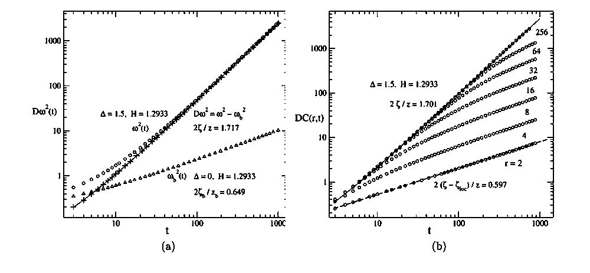

“random-field” 到底随机了什么？RFIM 又比一条弹性畴壁多了什么？
上一章已经把 depinning 当作临界现象来读。但要谈 universality，必须先回答更底层的问题：无序是改局域势垒、偏爱某个极化方向，还是直接作用在离散 order parameter 上？更重要的是——畴壁还能不能被压缩成一条单值弹性线？
权威来源：本章三篇核心论文均来自项目 Google Drive · `03 Depinning, elastic-interface, RFIM theory`。Figure 只取 Drive PDF 自身；Drossel Fig.3(a) 的 PDF 内嵌对象本身只有 400×400、1-bit，因此直接无损提取原对象，不做“600 DPI 放大”。
0 · 先拆掉最容易混淆的三个词
这里研究对象已经是一条/一张界面 u(x)。RB 与 RF 是 coarse-grained pinning disorder 的统计类别：它们描述随机势或随机力沿界面位移方向怎样相关。
关键词：interface 已先被定义；通常默认 single-valued、elastic description 有效。
随机变量 hi 直接耦合到局域 Ising order parameter Si。畴壁不是基本自由度，而是许多 spins 的边界涌现出来。
后果：界面可以产生 overhang、封闭 bubble、分叉/并合；这些结构并不天然存在于单值 elastic line。
1 · Dahmen & Sethna 1996：无序不是“加点噪声”，它能改变整个 switching 形态
这一篇先不追单条畴壁，而是问一个更宏观的问题：当 quenched random field 的强度 R 相对相互作用 J 改变时，缓慢扫外场得到的 hysteresis 会发生什么？答案是：低无序时一个 avalanche 可以横跨系统，产生宏观跳变；高无序时局域阈值被摊开，曲线变平滑；两者之间存在 disorder-induced critical point。
Tuning the amount of disorder in the system we find a second-order critical point with an associated diverging length scale, measuring the spatial extent of the avalanches of spin flips. A power-law distribution with avalanches of all sizes is seen only at the critical value of the disorder. However, our numerical simulations indicate that the critical region is remarkably large.
A simple way to implement a certain kind of uncorrelated, quenched disorder is by introducing uncorrelated random fields into the model. In magnets the random fields might model frozen-in magnetic clusters with net magnetic moments that remain fixed even if the surrounding spins change their orientation. In contrast to random anisotropies they break time-reversal invariance by coupling to the order parameter (rather than its square).
ℋ = − Σ⟨ij⟩ Jijsisj − Σi(H+fi)si
作者真正证明了什么
在零温、非平衡 RFIM 的慢驱动动力学中，作者用 RG、mean-field 与数值结果建立 disorder-induced criticality：临界 disorder 附近出现发散尺度、avalanche scaling 与普适临界行为。
作者没有证明什么
这不是 ferroelectric switching 的材料专属模型；也没有证明真实器件中的每一种缺陷都等价于 random field。把浓度波动、应变、charge trap 等映射成 hi 需要额外物理依据。
2 · Drossel & Dahmen 1998：一旦 RFIM 的墙开始“长枝杈”，single-valued interface 就可能失效
这篇对我们的主线特别关键。作者研究二维零温 RFIM 中的一堵受驱 domain wall。强 disorder 时，界面不是整齐推进，而是沿有利 random-field 路径呈 percolation-like invasion；即使 disorder 变弱，二维长尺度下仍可能出现 self-similar 行为。这里第一次非常直观地看到：“畴壁”未必还能写成一个 h(y)。
In the self-affine regime, which was seen in 3-dimensional simulations with bounded and Gaussian distribution of random fields, neighbouring interface segments proceed coherently, and the interface has a roughness exponent smaller than one. Overhangs and “bubbles” (i.e., uninvaded domains left behind by the advancing interface) occur only below a certain length scale and can therefore be neglected on long length scales, where the interface can be described by a single-valued function.
For strong disorder, the invading phase advances in a percolation-like manner, following routes of particularly high random field values. When the driving force is at the depinning threshold, the invading phase penetrates only a vanishing volume fraction of the invaded medium, just as a spanning cluster in percolation theory.

黑色是 invaded area。注意白色未翻转区域被留在已侵入区域内部：这就是 bubble / multiply-connected geometry 的直观版本。该 PDF 的原始 Figure 对象本身是 400×400、1-bit 图，本页直接无损提取，未做放大伪高清。
作者真正证明了什么
针对其二维 RFIM、零温、特定推进规则，作者给出数值与 scaling arguments，支持任意非零 Gaussian disorder 在足够长尺度、足够靠近 depinning 时趋向 percolation-like behavior，并讨论 ζ=1、df=4/3 等特征。
作者没有证明什么
它没有证明所有二维畴壁都属于 percolation universality。作者自己强调 lower critical dimension 与 crossover 的判断依赖模型、disorder distribution 和尺度；更不能直接把这里的 β=5/36 当成 sliding-FE 的答案。
3 · Zhou, Zheng & He：overhang 会直接污染你以为在测的 ζ
项目 Drive 中这份 PDF 是该作者组对二维 driven RFIM 的后续 arXiv 版本，延续其 2009 PRB 的 short-time domain-wall study。它的价值不是再给一个 depinning threshold，而是把 RFIM 与 QEW 的差别指向一个具体几何来源：overhangs。作者发现 global roughness 与 local roughness 不再表现为 QEW 的简单 superrough scaling，而出现 intrinsic anomalous scaling / spatial multiscaling。
In summary, with Monte Carlo simulation we have investigated the non-equilibrium critical dynamics of the two-dimensional driven random-field Ising model for the depinning transition and its background at zero temperature. The dynamic scaling behavior is carefully analyzed, and a dynamic roughening process is observed. The transition point and critical exponents are totally listed in Table I. Based on the short-time dynamics, it is more convenient and precise to measure these exponents than the work in the steady state close to the depinning transition.
The conjecture that the motion of a domain wall in a random-field system can be described by the equation EW with quenched disorder is in doubt here. And intrinsic anomalous scaling and spatial multiscaling are observed in the interface growth process of our work, quite different from the superrough scaling and spatial single scaling in QEW. When the overhangs vanish with the large driving field, the difference between these two models disappears. Hence, we conjecture that overhangs lead to the main difference between QEW and RFIM at the depinning transition.

(a) disorder-induced roughness Dω²(t) 与无 disorder background 分开；(b) 不同 r 的 DC(r,t) 呈现不同的时间标度。真正要读的是 ζ 与 ζloc 的分离：界面几何已不是“一根自仿射线 + 一个 ζ”就能概括。
作者真正证明了什么
在其二维、bounded random-field RFIM Monte Carlo 中，作者测得 short-time depinning scaling、dynamic roughening，并观察 intrinsic anomalous scaling 与 spatial multiscaling；这些结果与其 QEW comparison 不同。
作者没有证明什么
“overhang 是差异的主要原因”是作者基于对比提出的 conjecture，不是普适定理。RFIM 与 QEW 的差异还可能受更新规则、lattice anisotropy、disorder distribution 与 coarse-graining 定义影响。
回到 sliding ferroelectricity：什么时候该用哪一级模型？
优先从 elastic-line / elastic-manifold 思路出发；RB/RF 作为 pinning landscape 的统计类别来检验。
phase-field / Ginzburg–Landau 更自然：壁宽、局域极化、弹性/静电耦合都能保留，界面由场涌现。
不能只追一条 h(y)。需要 bulk field / lattice model，或者至少显式定义怎样从复杂畴结构提取有效界面。